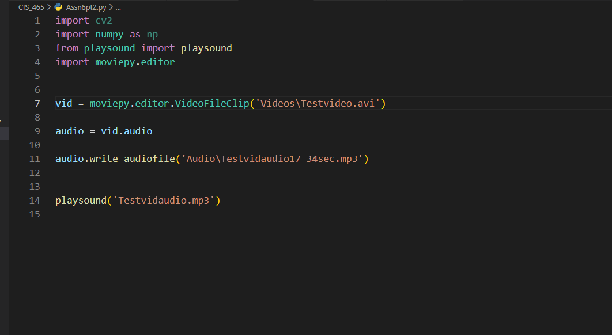
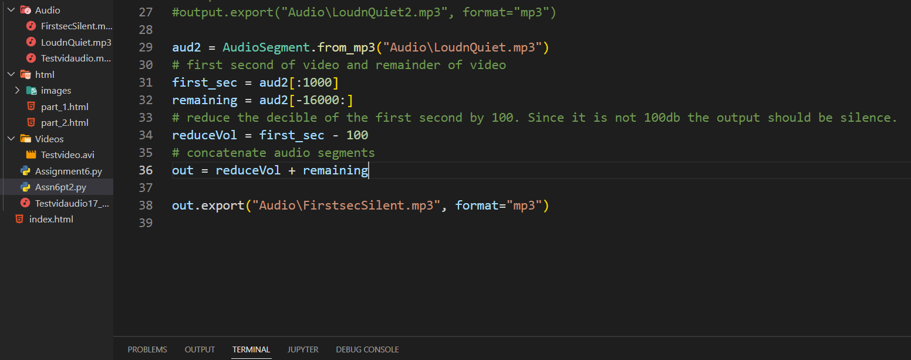
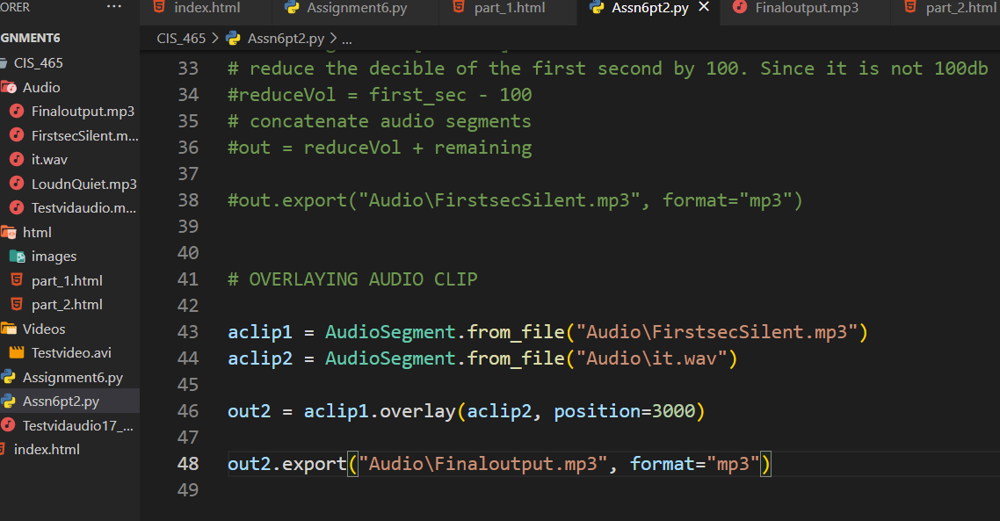

Here using moviepy I was able to extract the audio from the video as an mp3.
I ran the same command but with a subclip taken of the video from second 17 to 34. I extracted the mp3 and named it accordingly

Here I used the pydub audiosegemnt library. I had to download ffmpeg and set up the environment variables to get this code to run. The output audio's volume is increased by 10db for the first 3 seconds and decreased
by 5db for the last 3 seconds.
For this part of the assignment I decided to use the dB reduction to reduce the first second by 100db. I was pretty sure this was going to work if the measured volume was less than 100 which it was.
I did learn shortly after finishing this that i could have used AudioSegment.silent(1000) to make a silent one second clip that I could've instead concatenated on to the remaining segment.
For the last section I found the overlay function that pydub offers. I ended up using the it.wav file in blackboard and overlayed this on the output from the previous code. It did end up working well as the "information technology" can be heard playing with the FirstsecSilent audio it was concatenated to.
